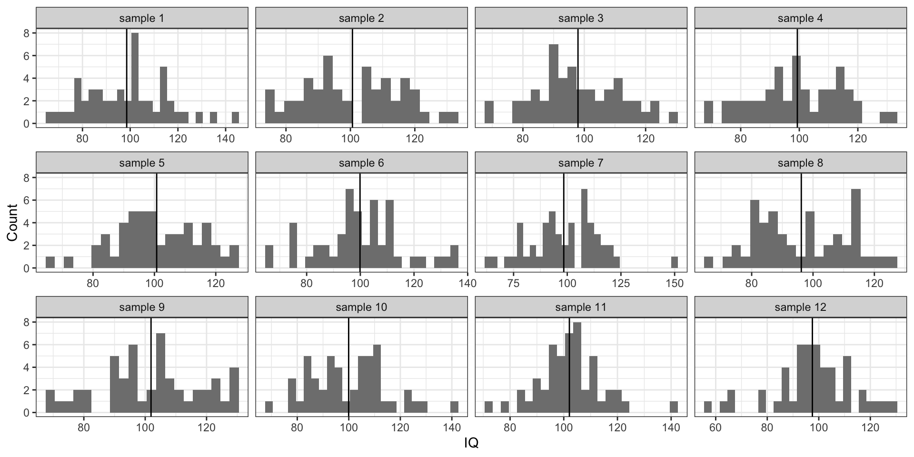
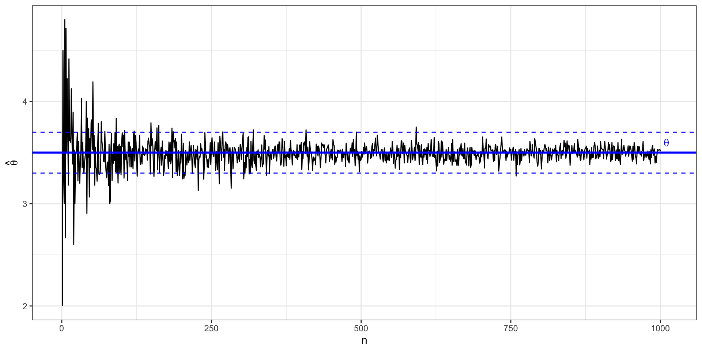
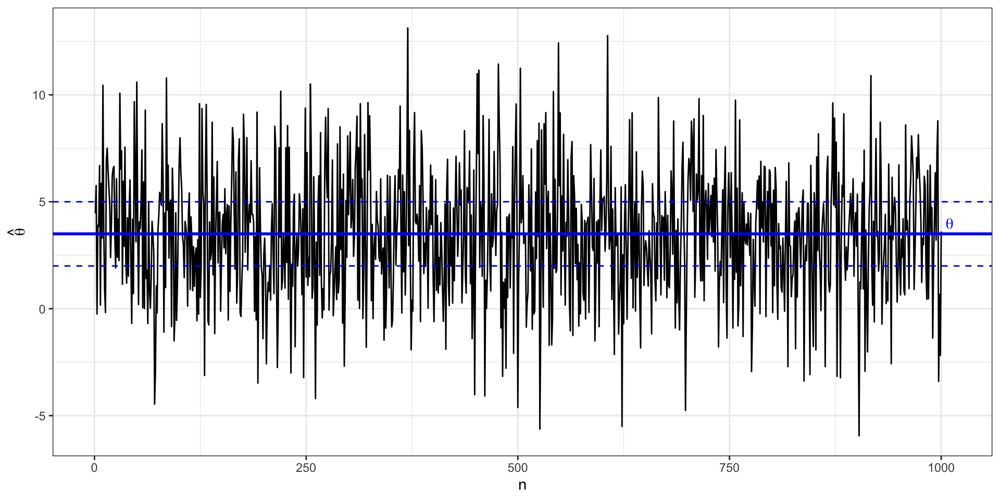
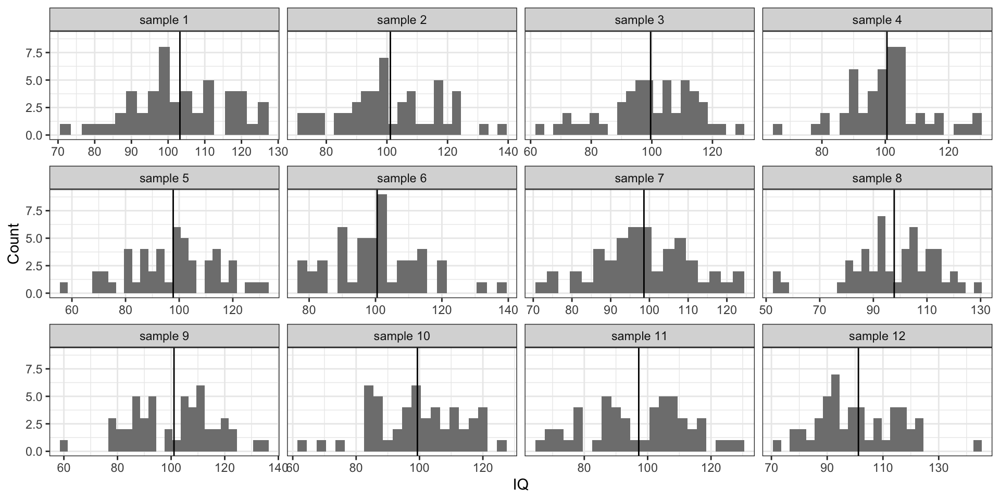

L6 // Оценивание параметров в практике статистического анализа. Тестирование статистических гипотез
IQ
- параметр — среднее значение
- признак — интеллект
- показатель — коэффициент IQ (\(X\))
- \(X \thicksim \mathcal N(100, 225)\)
Тут нам, конечно, повезло, потому что мы знаем, как устроена шкала IQ1, поэтому мы знаем значение нашего параметра — \(\mu = 100\). В общем случае, конечно, значение параметра, как мы отмечали выше, неизвестно.
Теперь попробуем наизвлекать выборок человек по 50 и посчитать оценки среднего (выборочные средние) \(\hat \mu\) на них:

Наблюдаем, что иногда мы при подсчёте оценке параметра попадаем близко к истинному его значению, иногда промахиваемся. Собственно, как раз об этом неопределённость и вариация.
Метод моментов
Чтобы получить точечные оценки параметров, используются разные методы. Метод зависит от того, какой параметр мы хотим оценить, а также с какой моделью мы сейчас работаем. Сейчас мы познакомимся с самым простым — методом моментов.
Слово «момент» обычно вызывает странные ощущения — какой момент? момент чего? что в этот момент случается? Тут надо отпустить привычное понимание слово «момент» как некоторого момента времени и принять тот факт, что «момент случайной величины» — а именно о нём мы говорим — это просто характеристика распределения случайной величины. То есть математическое ожидание — это момент распределения случайной величины, дисперсия — это момент распределения случайной величины.
В методе моментов есть три этапа:
- устанавливается связь между оцениваемым параметром и моментом распределения случайной величины
\[ \quad \theta = \xi(\mu_k), \]
где \(\mu_k\) — это момент случайной величины.
- находятся выборочные моменты
\[ \hat \theta = \xi(\mu_k^*) \]
- истинный момент заменяется на выборочный — получается оценка.
Вернемся к IQ. Эквивален среднего значения в случае генерально совокупности является математическое ожидание, поэтому значение параметра \(\mu\) определяется как
\[ \mu = \mathbb{E}X \]
Выборочным аналогом математического ожидания является выборочное среднее:
\[ \hat \mu = \frac{1}{n} \sum_{i=1}^n x_i = \bar x \]
И это, собственно, всё. Если вы хотя бы раз анализировали данные, вы имплицитно пользовались этим знанием. Просто, скорее всего, не задумывались, что это так работает.
Свойства точечных оценок
Так как точечные оценки всё же оценки, мы можем и промахнуться мимо истинного среднего — это мы наблюдали на гистограмме. Поэтому нам надо предъявить определённые требования к точечным оценкам, которые будут отражать «хорошесть» точечной оценки. Таких требования три: несмещённость, состоятельность и эффективность.
Свойства матемаческого ожидания
При обсуждении свойств точечных оценок нам потребуются два свойства математического ожидания:
- Математическое ожидание суммы независимых случайных величины равно сумме их математических ожиданий
\[ \mathbb{E}(X_1 + X_2) = \mathbb{E}X_1 + \mathbb{E}X_2 \]
- Константу можно выносить за знак математического ожидания
\[ \mathbb{E}(cX) = c \mathbb{E}X \]
Несмещенность
Несмещённость выражает следующую идею: когда мы постоянно используем выборочную оценку нашего параметра на выборках некоторого объема, мы в среднем не ошибаемся в оценке параметра.
То есть, конечно, при каждой конкретной оценке нашего параметра на отдельной выборке мы будем совершать ошибку, однако в среднем при многократном повторении измерений и получения оценки мы будем попадать точно в цель — в параметр генеральной совокупности.
\[ \forall n \; \mathbb{E} \hat \theta = \theta \] где \(n\) — объём выборок.
Выше мы рассматривали выборочное среднее как оценку математического ожидания генеральной совокупности. Давайте проверим, является ли такая оценка несмещнной. Для этого нам надо проверить, что выполняется следующее соотношение:
\[ \mathbb{E}(\bar x) = \mu \]
Пусть у нас есть \(n\) выборок, на которых измерена переменная \(X\) — \(X_1\), \(X_2\), \(\dots\), \(X_n\). Эти выборки пришли из одной генеральной совокупности, то есть \(X_1, X_2, \dots ,X_n \overset{\text{i.i.d}}{\thicksim} (\mu, \sigma^2)\). Запись \(\text{i.i.d.}\) означает «независимые одинаково распределенные» (independent identically distributed).
Тогда получается следующее:
\[ \mathbb{E}(\bar X) = \mathbb{E}\Big( \frac{1}{n} (X_1 + X_2 + \dots + X_n) \Big) = \frac{1}{n} \Big( \mathbb{E}(X_1) + \mathbb{E}(X_2) + \dots + \mathbb{E}(X_n) \Big) \]
Поскольку все \(X_i\) пришли из одного и того же распределения \((\mu, \sigma^2)\), то \(\forall i \, \mathbb{E}(x_i) = \mu\). Тогда
\[ \mathbb{E}(\bar X) = \frac{1}{n} \cdot n \cdot \mu = \mu \]
А это ровно то, что утверждается в качестве несмещенности. Таким образом, среднее является несмещенной оценкой математического ожидания.
Кроме среднего, у нас есть еще дисперсия, и мы её тоже всегда оцениванием в ходе анализа данных. На практике мы говорили, что дисперсия случайной величины определяется как \(\text{var}(X) = \mathbb{E}(X^2) - \big( \mathbb{E}X\big)^2\). Эта формула удобна для расчетов, однако дисперсию можно определить и иначе:
\[ \text{var}(X) = \mathbb{E}(X - \mathbb{E}X)^2 = \frac{\sum_{i=1}^n(\mu - x_i)^2}{n} \]
Две формулы, кстати, эквивалентны друг другу и одна выводится из другой:
\[ \begin{split} \text{var}(x) &= \mathbb{E}\big( (X - \mathbb{E}X )^2 \big) = \mathbb{E}\big( X^2 - 2 X \mathbb{E}X + (\mathbb{E}X)^2 \big) = \\ & = \mathbb{E}(X^2) - 2 \mathbb{E}X \mathbb{E}X + (\mathbb{E}X)^2 = \mathbb{E}(X^2) - 2 (\mathbb{E}X^2) + (\mathbb{E}X)^2 = \\ & = \mathbb{E}(X^2) - (\mathbb{E}X^2) \end{split} \]
Итак, в качестве оценки дисперсии, кажется, можно использоваться \(\text{var}(X) = \frac{\sum_{i=1}^n(\mu - x_i)^2}{n}\), однако из столкновения с реальностью мы знаем, что в знаменателе формулы, которую мы реально используем стоит \(n-1\). Почему?
Проверим оценку дисперсии на несмещенность. Нам нужно показать, что \(\mathbb{E}(\hat \sigma^2) = \sigma^2\), тогда мы сможем сказать, что оценка является несмещенной. По формуле получается, что
\[ \begin{split} \mathbb{E}(\hat \sigma^2) & = \mathbb{E}\Big( \mathbb{E}(X^2) - (\mathbb{E}X)^2 \Big) = \\ & = \mathbb{E}\Big( \overline{X^2} - \bar X^2\Big) = \mathbb{E}(\overline{X^2}) - \mathbb{E}(\bar X^2) \end{split} \]
Рассмотрим сначала \(\mathbb{E}(\overline{X^2})\):
\[ \mathbb{E}(\overline{X^2}) = \mathbb{E}\Big( \frac{X_1^2 + X_2^2 + \dots + X_n^2}{n} \Big) = \frac{1}{n} \Big( \mathbb{E}X_1^2 + \mathbb{E}X_2^2 + \dots + \mathbb{E}X_n^2\Big) \]
Так как все наблюдения приходят из одного и того же распределения, то все математические ожидания будут равны, поэтому:
\[ \mathbb{E}(\overline{X^2}) = \frac{1}{n} \cdot n \cdot \mathbb{E}(X_i^2) = \mathbb{E}(X_i^2) \]
Теперь \(\mathbb{E}(\bar X^2)\):
\[ \begin{split} \mathbb{E}(\bar X^2) &= \mathbb{E}\Big( \frac{X_1 + X_2 + \dots + X_n}{n} \Big)^2 = \\ & = \frac{1}{n^2} \mathbb{E}(X_1 + X_2 + \dots + X_n)^2 = \\ & = \frac{1}{n^2} \mathbb{E}(X_1^2 + X_2^2 + \dots X_n^2 + 2X_1X_2 + \dots + 2X_{n-1}X_n) = \\ & = \frac{1}{n^2} \mathbb{E}\Big( (X_1^2 + X_2^2 + \dots X_n^2) + (2X_1X_2 + \dots + 2X_{n-1}X_n) \Big) \end{split} \]
Внутри скобок получается два слагаемых: если с \(X_i^2\) все понятно — выше мы уже с ним сталкивались, то со вторым надо разбираться, а именно, подсчитать, сколько попарных произведений случайных величин у нас будет. Их будет \(C_n^2 = \frac{n(n-1)}{2}\). Поэтому если мы будем раскрывать скобки, то получим слоедующее:
\[ \begin{split} \mathbb{E}(\bar X^2) & = \frac{1}{n^2} \cdot n \cdot \mathbb{E}(X_i^2) + \frac{1}{n^2} \cdot \frac{n(n-1)}{2} \cdot 2 \mathbb{E}(X_iX_j) = \\ & = \frac{1}{n} \mathbb{E}(X_i^2) + \frac{n-1}{n} (\mathbb{E}X_i)^2 \end{split} \]
Теперь соберем две части вместе:
\[ \begin{split} \mathbb{E}(\hat \sigma^2) & = \mathbb{E}(\overline{X^2}) - \mathbb{E}(\bar X^2) = \\ & = \mathbb{E}(X_i^2) - \frac{1}{n} \mathbb{E}(X_i^2) - \frac{n-1}{n} (\mathbb{E}X_i)^2 = \\ & = \frac{n}{n} \mathbb{E}(X_i^2) - \frac{1}{n} \mathbb{E}(X_i^2) - \frac{n-1}{n} (\mathbb{E}X_i)^2 = \\ & = \frac{n-1}{n} \Big ( \mathbb{E}(X_i^2) - (\mathbb{E}X_i)^2 \Big) = \\ & = \frac{n-1}{n} \sigma^2 \end{split} \]
Получается, что математическое ожидание нашей оценки оказывается равно не самому значению интересующего нас параметра, а значению параметра, умноженному на некоторое число \(\frac{n-1}{b}\), то есть оценка является смещенной. Именно поэтому для расчета дисперсии на выборке используется выборочная, или исправленная, дисперсия.
Как она исправляется? Если у нас оценка дисперсии отличается от значения параметра в \(\frac{n-1}{n}\) раз, то надо домножить оценку на \(\frac{n}{n-1}\):
\[ s^2 = \frac{n}{n-1} \cdot \hat \sigma^2 = \frac{n}{n-1} \cdot \frac{1}{n} \sum (x_i - \bar x)^2 = \frac{1}{n-1} \sum (x_i - \bar x)^2 \]
И вот мы получили знакомую нам формулу для расчета выборочной дисперсии. Такая оценка является несмещенной.
Иногда несмещенность от оценки бывает потребовать сложно, тогда можно ограничиться ассимптотической несмещенностью:
\[ (\mathbb{E}\hat \theta - \theta) \underset{n \rightarrow \infty}{\rightarrow} 0, \]
где \((\mathbb{E}\hat \theta - \theta)\) — смещение. Ассимптотическая несмещенность требует, чтобы математическое ожидание нашей оценки приближалось к значению параметра с ростом объема выборки.
Состоятельность
Математически состоятельность определяется следующим образом:
\[ \lim_{n \rightarrow \infty} \mathrm{P}(|\hat \theta - \theta| < \varepsilon) = 1, \, \varepsilon > 0 \]
Содержательно эта запись нам говорит следующее, что при неограниченном росте мощности выборки наша оценка стремится к истинному значению параметра. Или, проще, с ростом выборки значение нашей оценки все реже выпадает из некоторого достаточно узкого интервала \((\theta - \varepsilon, \theta + \varepsilon)\). Может быть, такая формулировка не совсем точна математически, но позволяет представить, что происходит.
Давайте посмотрим на это на картинке. Нже изображено поведение состоятеной оценки с ростом выборки:

А так ведет себя несостоятельная оценка:

Эффективность
Эффективность точечной оценки определяется достаточно просто. Так как оценка параметра — это случайная величина, но у неё есть дисперсия. Чтобы оценка была эффективна, её дисперсия должна быть минимальной:
\[ \sigma^2_{\hat \theta} = \min \]
Опять же попробуем посмотреть на это на картинке:

Интервальные оценки
Кроме самого значения оценки, необходимо определить качество этой оценки, иначе говоря — её точность. Для этого используется такая величина как надёжность:
\[ \gamma = \mathbb{P}(\theta_\min < \theta < \theta_\max) \]
Такая форма оценки называется интервальной оценкой параметра, так как мы указываем интервал, в котором находится истинное значение с определённой вероятностью.
Такая форма оценки даёт исчерпывающую информацию о параметре: мы знаем (1) интервал, в котором находится значение параметра генеральной совокупности, а также (2) надёжность, с которой выбранный интервал накрывает это значение.
Значение надежности \(\gamma\) может быть выбрано произвольно, но обычно оно близко к единице. Однако необходимо помнить, что чем выше надёжность, тем шире границы интервальной оценки.
Стандартная ошибка
Для того, что получить интервальную оценку нашего параметра, нам нужно изучить, как ведет себя наша выборочная оценка в случае, когда мы много раз извлекаем выборку из генеральной совокупности. Рассмотрим на примере среднего значения.
Пусть мы в том же примере с IQ, который обсуждали выше. Мы знаем, что распределение параметра в генеральной совокупности такое:

Вновь извлечем несколько выборок из нашей генеральной совокупности:

Мы уже отмечали, что на отдельной выборке мы будем получать оценку среднего, которая будет отличаться от значения параметра в генеральной совокупности. Однако если мы извлечем много выборок — скажем, 1000 выборок по 100 наблюдений — посчитаем на каждой среднее и построим распределение выборочных средних, то получим нечто такое:
Наши средние будут как-то распределены, при это среднее средних будет оказываться очень близко с значению нашего параметра. При этом данное распределение крайне похоже на нормальное и может быть описано как \(\mathcal N(\overline{\bar x}, \sigma_{\bar x}^2)\), то есть как и любое нормальное распределение получившееся распределение будет описываться некоторой дисперсией. Стандартное отклонение этого распределения называется стандартной ошибкой среднего (standard error of mean):
\[ \text{se}(\bar x) = \sqrt{\sigma^2_{\overline x}} = \sigma_{\overline x} \]
В нашем случае оно будет равно 1.43.
Стандартная ошибка среднего является одной из интервальных оценок среднего значения. Однако выше мы сказали, что для интервальной оценки нам надо указать надежность, то есть вероятность, с которой значение изучаемого параметра находится в интервале, задаваемом интервальной оценкой. Можем ли мы это сделать в случае стандартной ошибки? Да, поскольку мы значем как устроено нормальное распределение. Так как стандартная ошибка является стандартным отклонением распределения выборочных средних, а в пределах отдного стандартного отклонения от среднего лежит 68.2% значений нормально распределенной случайной величины, то мы можем записать:
\[ \begin{split} 0.682 & = \mathbb{P}(\overline{\bar x}-\sigma^2_{\overline x} < \mu < \overline{\bar x}+\sigma^2_{\overline x}) \\ & = \mathbb{P}(98.57 < \mu < 101.43) \end{split} \]
То, что мы проделали выше легитимизировано цетральной предельной теоремой. Визуализацию можно найти здесь.
Это конечно хорошо, но мы же не можем каждый раз извлекать по 1000 выборок, чтобы рассчитать стандартную ошибку среднего. Нам необходим способ её расчета по одной выборки, чтобы мы могли производить интервальную оценку нашего параметра в одном отдельной исследовании. Такой способ подсчета есть, и он выглядит так:
\[ \text{se}_X = \frac{\text{sd}_X}{\sqrt{n}} = \frac{\hat \sigma^2_X}{\sqrt{n}} \]
Вообще-то такое равенство совершенно неочевидно, поэтому попробуем понять, почему оно справедливо.
Свойства дисперсии
Для того, чтобы вывести эту формулу нам потребуются два свойства дисперсии:
- Дисперсия суммы двух независимых случайных величины равна сумме их дисперсий
\[ \text{var}(X + Y) = \text{var}(X) + \text{var}(Y) \]
- Константа выносится из-под знака дисперсии с возведением в квадрат:
\[ \text{var}(aX) = a^2 \text{var}(X) \]
Так как наблюдения извлекаются из независимых одинаково распределенных величин (independent identically distributed, iid), то они независимы. Получается что дисперсия распределения выбборочных средних будет равна:
\[ \text{var}\bar X_i = \text{var}\Big( \frac{1}{n} \sum X_i \Big) \]
По свойствам дисперсии:
\[ \begin{split} \text{var}\bar X_i & = \text{var}\Big( \frac{1}{n} \sum X_i \Big) \\ & = \frac{1}{n^2} \sum \text{var}(X_i) = \frac{1}{n^2} \sum \sigma^2 = \frac{n}{n^2} \sigma^2 = \frac{\sigma^2}{n} \end{split} \]
Так как стандартная ошибка это старндартное отклонение распределения выборочных средних, то:
\[ \text{se}_X = \sqrt{ \text{var}\Big( \frac{1}{n} \sum X_i \Big)} = \sqrt{\frac{\sigma^2}{n}} = \frac{\sigma}{\sqrt{n}} \]
Вот и получается формула для расчета стандартной ошибки на одной выборке.
Доверительный интервал
Другим вариантом интервальной оценки является доверительный интервал (confidence interval). На практике он используется гораздо чаще стандартной ошибки, но оказывается тесно с ней связан. Итак, ещё раз:
\[ \mathrm{P}(\theta_\min < \theta < \theta_\max) = \gamma, \; \gamma \rightarrow 1 \]
\(theta_\min\) и \(\theta_\max\) — границы доверительного интервала, \(\gamma\) — доверительная вероятность. На практике её значение чаще всего принимается равным \(0.95\).
Что нам нужно, чтобы определить границы, в которых значение параметра лежит с вероятностью \(0.95\), если мы значем, про наша оценка распределена нормально?
Мы знаем особое нормальное распределение \(z \thicksim \mathcal N(0, 1)\), которое называется стандартным нормальным распределением. Можно рассчитать границы следующего интервала:
Оказывается, что \(z\)-значение с вероятностью 0.95 попадается в интервал \([z_{\min}, z_{\max}] = [-1.96, 1.96]\). Зная эти точки и воспользовавшись принципом стандартизации, мы можем записать следующее:
\[ \mathbb{P}\Big( \bar x - z_\min \text{se}_X < \mu < \bar x + z_\max \text{se}_X \Big) = \gamma \]
Или конкретнее:
\[ \mathbb{P}\Big( \bar x - -1.96 \text{se}_X < \mu < \bar x + 1.96 \text{se}_X \Big) = 0.95 \]
То есть, зная стандартную ошибку мы можем рассчитать доверительный интервал. В общем случае, любой — 95%, 90%, 99% и др. — подставляя разные \(z_\min\) и \(z_\max\).
Интерпретация доверительного интервала
С учетом расчета нам очень хочется сказать, что границы доверительного инетрвала задают диапазон, в котором значение нашего параметра — математического ожидания в генеральной совокупности — лежат с вероятностью 0.95. Однако это не верно!
Здесь в игру вступает фреквентистский подход (см. далее), в котором мы с вами живем. Корректная интерпретация границ доверительного интервала звуит так:
Если мы будет бесконечно извлекать новые выборки из генеральной совокупности, рассчитывать на них средние и 95% доверительные интервалы к ним, то генеральное среднее попадёт в границы 95% таких доверительных интервалов.
То есть, если мы извлечем 100 выборок, посчитаем на каждой из них среднее и построим 95% доверительный интервал к каждому из 100 средних, то 95 доверительных интервалов из 100 будут содержать генеральное среднее — а 5 интервалов содержать его не будут.
Визуализацию этого можно наблюдать здесь.
Реальная вероятность, что значение параметра генеральной совокупности попадет в пределы конкретного доверительного, рассчитанного в данном исследовании, оказывается меньше — около 84.3%.